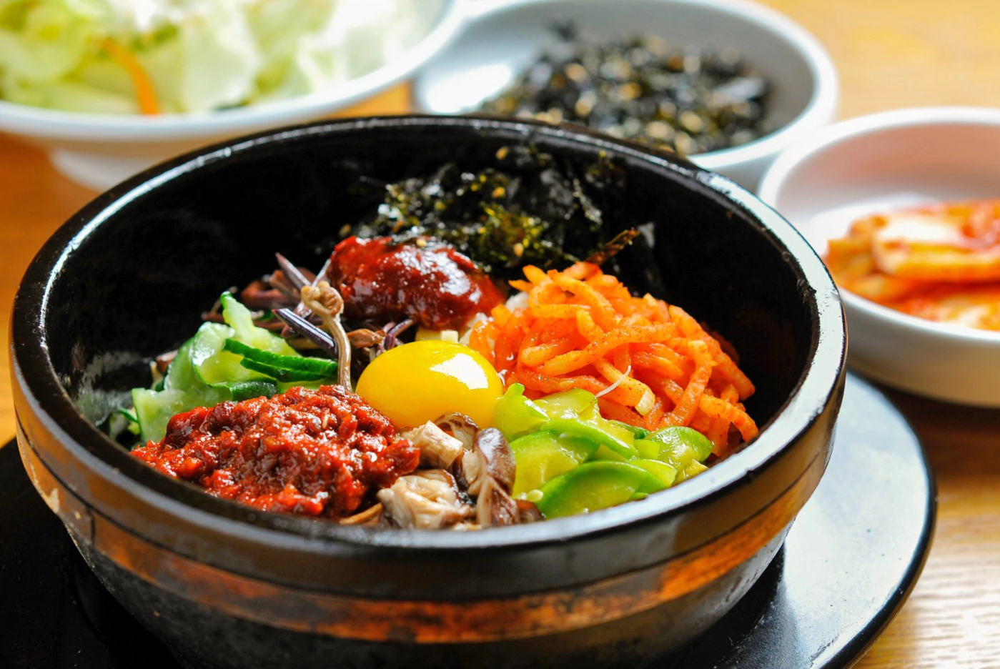
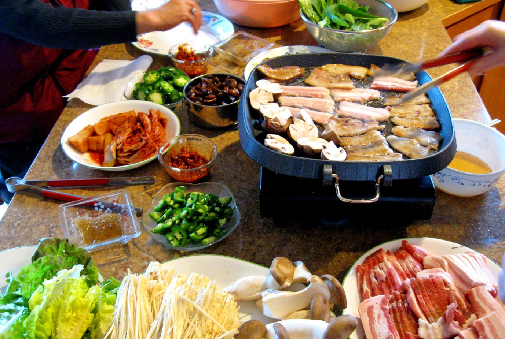
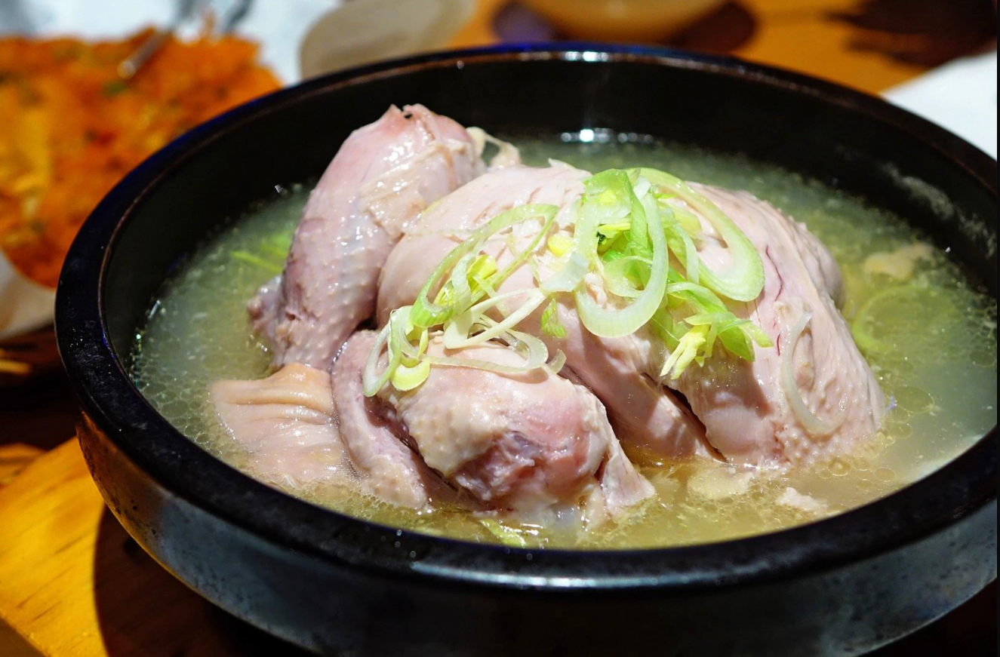

Top 3 Korea Cuisines!
1. Bibimbap
Bibimbap, sometimes romanized as bi bim bap or bi bim bop, is a Korean rice dish. The term "bibim" means mixing rice (burned rice at the bottom of the dish and cooked rice), while the "bap" noun refers to rice. Bibimbap is served as a bowl of warm white rice topped with namul (sautéed and seasoned vegetables) or kimchi (traditional fermented vegetables) and gochujang (chili pepper paste), soy sauce, or doenjang (a fermented soybean paste). A raw or fried egg and sliced meat (usually beef) are common additions. The hot dish is stirred together thoroughly just before eating.
2. Samgyeopsal
Grilled meat is placed on fresh and/or pickled leaves of vegetables, with some ssamjang, and rolled up to make ssam (wrap) which is eaten in one mouthful. Any combination of accompaniments mentioned above can be added to the roll according to preference, most popularly sliced garlic. Cooked rice, stews such as kimchi-jjigae and doenjang-jjigae, as well as naengmyeon (cold noodles), can be served as meals. Sometimes, leftover meat is mixed with rice, gim-garu (seaweed flakes), and seasonings to make bokkeum-bap (fried rice) at the end.
3. Samgyetang
Samgye-tang (삼계탕; 蔘鷄湯) or ginseng chicken soup, meaning ginseng (Kor. sam) - chicken (Kor. gye) - soup (Kor. tang) in Korean, consists primarily of a whole young chicken (poussin) filled with garlic, rice, jujube, and ginseng. Samgye-tang is a Korean traditional soup for body health. Samgye-tang is a representative summer health food. Soup made with chicken that is slightly larger than the chick is called Yeonggye Baeksuk, and the chicken is divided into half is called Banggye-tang.